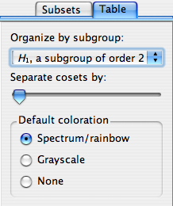

This page documents the interface for the large view of a multiplication table. A multiplication table is one of Group Explorer's four visualizers, all of which can appear either in help windows, sheets, or in their own windows. When they appear in their own windows, this is refered to as a "large view," and you can read about it in general here. This page concentrates specifically on the differences between a large view for multiplication tables, as compared to the other visualizers.
You can choose the order of elements along the top row (or left column) of the multiplication table using your mouse. (Note that order of elements in the top row and left column determine the contents of the rest of the table. Group Explorer fills it out using the group operation.)
To move an element from one point to another in the top row, simply click on the element's cell in the table and drag your mouse to the new position (left or right in the top row). To move an element in the left column, the procedure is the same, except vertical. Note that the top row and left column will stay synchronized, so no matter which one you reorder, both will change.
You can also ask Group Explorer to organize the top row/left column of the table according to a particular subgroup and its cosets; see below.
On the edit menu and on the toolbar for large windows viewing multiplication tables, you will find controls for Zoom in and Zoom out
and Zoom out . These controls simply change the magnification level at which you are viewing the multiplication table. For a very small multiplication table, you may want a large image, and zooming in is useful. For a very large multiplication table (and a not-so-large screen) you may find that zooming out is helpful.
. These controls simply change the magnification level at which you are viewing the multiplication table. For a very small multiplication table, you may want a large image, and zooming in is useful. For a very large multiplication table (and a not-so-large screen) you may find that zooming out is helpful.
|  | Note that the controls panel for multiplication table large views has two tabs at the top: Subsets and Table. The first of these allows you to highlight subsets of the group in the table; see below for information on that tab. The second of these allows you to change the structure or appearance of the table in other ways. This section describes those controls. |
By default, the "Organize by subgroup:" drop-down list at the top of the Table tab has "none" selected. However, if you wish to organize the top row (and left column) of the multiplication table so that a particular subgroup is at the left (top) and its cosets follow it one after the other, you can choose that subgroup from this drop-down list.
You can also choose the exact order of the elements in the top row or left column of the table manually; see above.
If you have made a selection on the "Organize by subgroup:" drop-down list (see above), then Group Explorer also enables you to put some vertical and horizontal space between the cosets in the multiplication table, to help the viewer visually separate them. The slider under the "Separate cosets by:" header determines how much space (the leftmost extreme is zero, no space, the default).
This is especially useful when the subgroup in question is normal, because it helps visualize the quotient group. As an example, consider this multiplication table illustrating the quotient of D4 by ℤ2.
There are three colorization schemes for multiplication tables:
The first is the default, and makes multiplication tables use all the hues in the color spectrum, as in the first illustration on this page. Grayscale is appropriate if you intend to print on a black-and-white printer; the colors of gray contrast better than the rainbow hues, which all have the same saturation and intensity. Choosing None makes the multiplication table just black text on white background.
Note that the colorization scheme you choose is overridden by any highlighting you do on the Subsets tab.
The controls in the Subsets tab on the right side of the large window for multiplication tables are described in the help page for subset controls.
Quick help links:
Contents | Getting Started | Tutorials | User Manual | Miscellaneous Reference
GE terminology | Help on help
{kind=link}